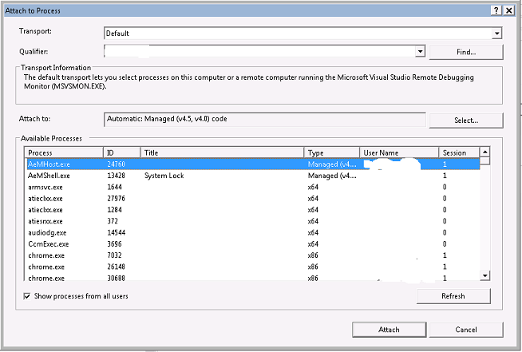
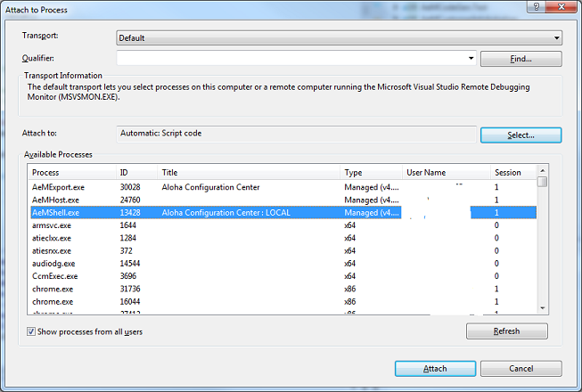
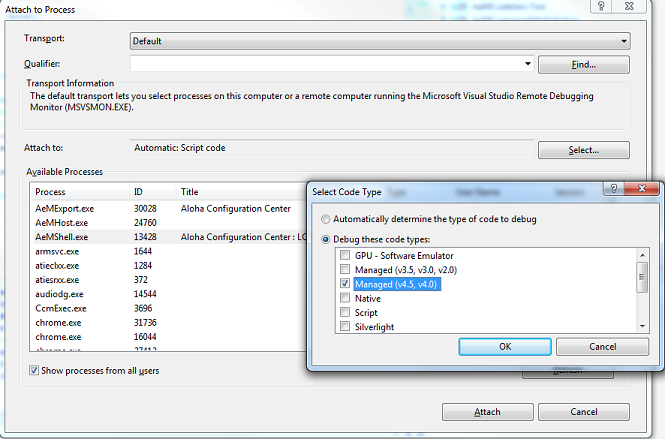

Visual Studio 2012 debugger does not break after attaching to C#/.NET process
I had from time to time issue debug C#/.NET applications in Visual Studio 2012 after attaching Visual Studio 2012 debugger to a process.
Symptoms were that the debugger attached to the process but neither ‘Break All’ worked. The same applied for any preset breakpoint.
For some time I thought that Visual Studio installation for somehow corrupted on my system but since I was always able to workaround it via Debug.Assert() or Debugger.Break() calls put directly into code I had never motivation to really look for a solution nor reinstall the Visual Studio.
Today I really wanted to attach to a process to see what is going on inside and the issue happened again.
After a bit of playing I realized that in the case that debugger works after attaching correctly the ‘Attach to Process’ Visual Studio dialog looks like this (see ‘Attach to’ field): 
For my process it didn’t work this time and ‘Attach to Process’ dialog looked like this (again see ‘Attach to’ field): 
Apparently Visual Studio in some cases does not properly detect the type of the process and does not use correct debugger settings.
In order to solve my issue I finally found the ‘Select…’ button following ‘Attach to’ field where you can disable automatic detection of the process type and manually select a different one.

After selecting ‘Manager (v4.5, 4.0)’ and attaching debugger to process again everything worked well.